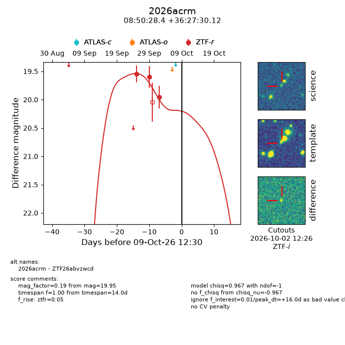
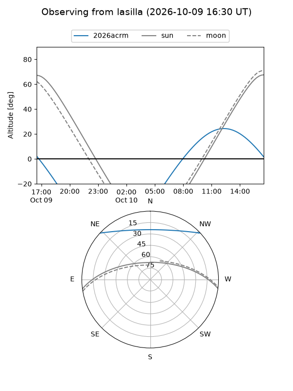
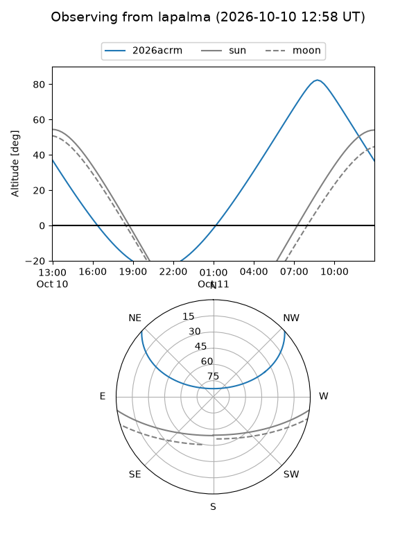
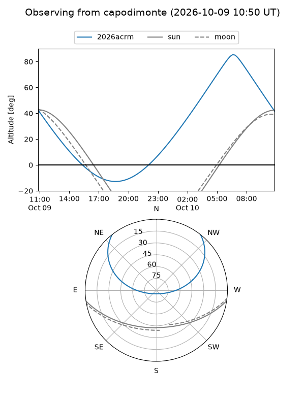
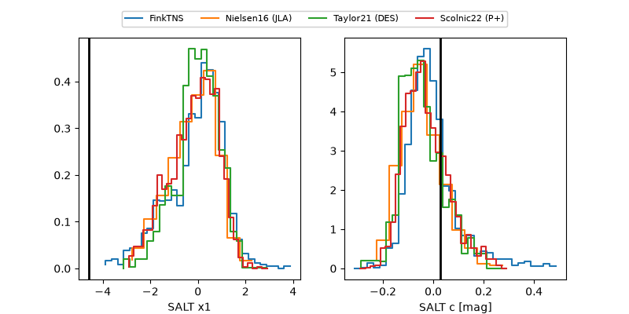

2026acrm
Target 2026acrm at 2026-10-09 12:32
Aliases and brokers:
FINK-ZTF: ztf.fink-portal.org/ZTF26abvzwcd
Lasair-ZTF: lasair-ztf.lsst.ac.uk/objects/ZTF26abvzwcd
ALeRCE-ZTF: alerce.online/object/ZTF26abvzwcd
YSE-PZ: ziggy.ucolick.org/yse/transient_detail/2026acrm
TNS name: wis-tns.org/object/2026acrm
Direct TNS query: direct search
alt names
ZTF26abvzwcd (ztf,fink_ztf)
2026acrm (tns,yse)
Coordinates:
equatorial (ra, dec) = 132.6184,+36.45837
equatorial (HMS+DMS) = 08:50:28.42,+36:27:30.12
galactic (l, b) = (186.5166,+38.77440)
Flags:
peak dt: +16.0
Photometry:
last ztfr=19.95
3 ztfr detections
Lightcurve

Visibility



Additional plots
